Why study ore that's forming today
The deposits we mine aren't only the products of processes that switched off long ago. Many are relics of processes that are still going on somewhere right now. That matters because a rock only gives you the end result. A living system lets you quantify the process: you can measure the fluid temperature directly, its pH, how much metal and how many volatiles it carries, and how fast it's flowing. Those numbers then help you explore for new deposits and predict where known ones continue. slide 3 lecture recording, 25 Sep
Three deposit types can be watched forming today: deposits on the seafloor, epithermal gold around active volcanoes and hot springs, and roll-front uranium. All of them sit where plate tectonics predicts. The present-day examples are wider than you might expect:
slide 4 · lecture recording, 25 Sep
The first vents, 1977
Vents were first found in 1977 on the and the Galapagos spreading centre, between the Pacific, Cocos and Nazca plates. The crust there spreads apart at about 6 cm a year. The dive site sat inside the fault-bounded graben that runs along the crest of the rise, exactly where you'd expect magma to be close to the surface. slide 9
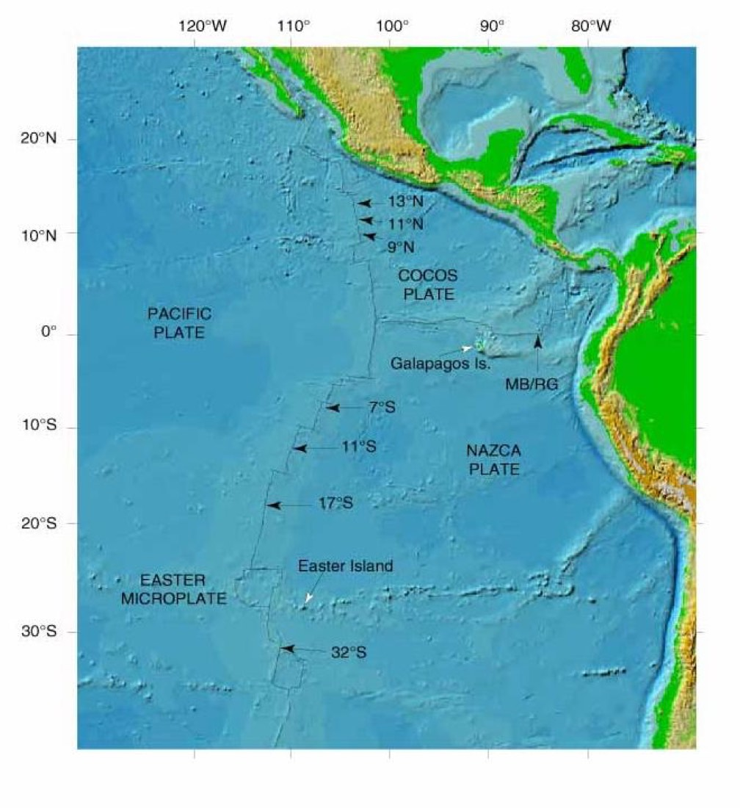
The first surveys towed a camera along a 10 km stretch of the rise, and the result set the rules for everything since. Venting is a normal feature of mid-ocean ridges. But only some vents are active at any moment, and the active ones vary a lot in how vigorous, how hot and what composition they are. Vents die, and some come back to life later. Keep that in mind when you look at an ancient deposit: it records many vents switching on and off, not one steady pipe. slide 10
Getting there is the hard part. Alvin, the American submersible, worked at about 2.5 km depth, where the water is 2 °C and the pressure is about 250 atmospheres. You're folded into a tiny sphere with no physical link to the ship, only radio. When Cornel de Ronde's team from GNS Science first sampled Brothers volcano, they happened to be in the old Alvin with glass viewports. They ran into hydrogen sulphide and other gases pouring out of the vents, which would have attacked the acrylic windows of newer submersibles. Old technology won that day. slide 6 lecture recording, 25 Sep
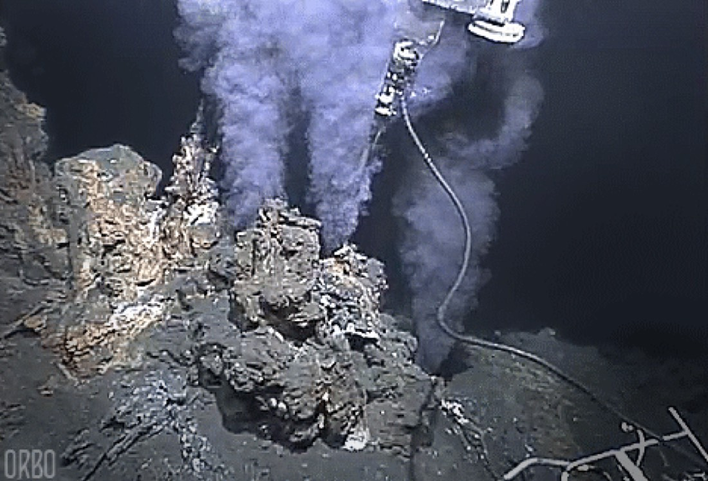
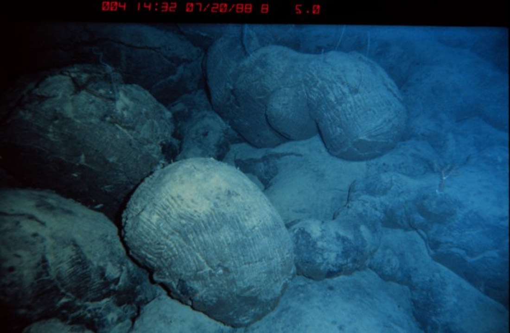
A shows a sample being taken. B is lava on the floor of the rise. What is the lava, and what would you expect its surface to look like in hand specimen?
Show what I see
A is the submersible's arm snapping a sample off an active black smoker, so the mineralogy can be studied as it forms. B is recent, still-hot . Lava erupting into 2 °C water chills instantly, so the rims are glassy. Ian brought a sample from an active Brothers volcano to the lecture to show exactly that: very glassy, because it froze the moment it met the cold water.
- Glassy, quenched rinds on basalt mean eruption into water: pillows sit in the volcanic sequence of seafloor VMS settings. lecture recording, 25 Sep
How a black smoker works
Below the vent, seawater has soaked down through cracks, been heated by magma and turned into a hot, acidic fluid carrying dissolved metals: somewhere around 150 to 300 °C on the slide, and 350 to 400 °C in the hottest black smokers. It shoots out of the seafloor into water that is cold (2 °C), alkaline and saline. Mixing with that seawater, together with the sudden drop in pressure as it leaves the rock, makes the dissolved metals insoluble, and sulphides precipitate. For zinc, the slide writes it as slides 8 and 38
Zn²⁺ + 2HS⁻ → ZnS (sphalerite) + H₂S
The "smoke" isn't smoke at all. It's a cloud of tiny metal sulphide particles that crystallise the instant the hot fluid meets the cold water. That's why the sulphides in modern vent deposits are extremely fine grained. Ancient VMS sulphides are coarser because they have been partly recrystallised since. lecture recording, 25 Sep
Vent fluid lab
Teaching model. The temperature bands follow slides 18 and 38 and the recording (copper minerals around 350 °C, sphalerite and galena below that, white smokers 260 to 300 °C); real vents overlap.
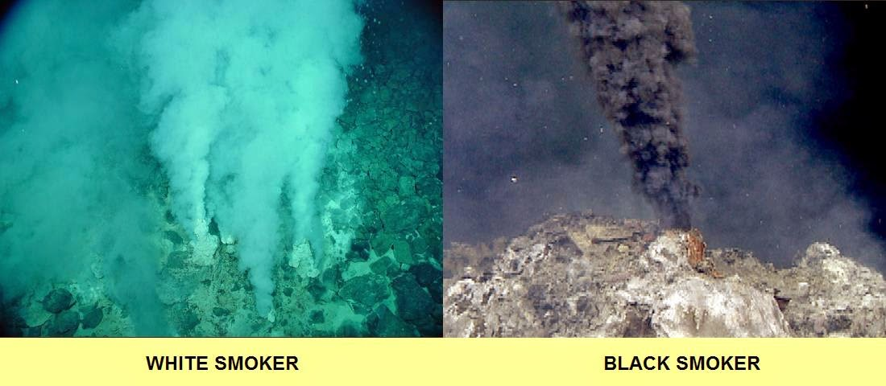
Which vent is hotter, and what is each one putting into the water?
Show the reasoning
The right-hand vent is a black smoker: hotter (350 to 400 °C), with dissolved metals precipitating as tiny dark sulphide particles. The left is a white smoker: cooler (260 to 300 °C), giving off lighter-coloured barium, calcium and silicon minerals such as baryte, anhydrite and amorphous silica. The sulphide ore comes from the black smokers, not the white ones.
- Seafloor at about 2.5 km: 2 °C and about 250 atm.
- Black smokers: 350 to 400 °C, metal sulphides. White smokers: 260 to 300 °C, Ba, Ca and Si minerals (baryte, anhydrite, silica).
- Precipitation is driven by mixing hot, acidic, metal-rich fluid with cold, alkaline, saline seawater, plus the pressure drop at the seafloor.
- Mounds: sphalerite, pyrite, chalcopyrite. Chimneys: sphalerite, galena, anhydrite.
Inside a chimney
A chimney is a pipe the vent builds around its own jet. It starts when seawater right next to the hot jet is heated: calcium sulphate is less soluble when hot, so precipitates and makes a first fragile wall. That wall shields the fluid inside from the seawater, and sulphides start to crystallise against it. The hottest fluid flows up the open centre, so the centre is where the high-temperature minerals end up. slides 18 and 21
The result is a zoned tube. Slide 18 lists the zoning of a black smoker chimney: the exterior, in contact with cold seawater, is anhydrite, gypsum and sphalerite; the interior, bathed in the hottest fluid, is copper minerals: chalcopyrite, and bornite. Pyrrhotite, pyrite and sphalerite make up the cooler black smoker material. White smoker chimneys are amorphous silica, baryte and pyrite, sometimes with sulphur and a little sphalerite. Copper minerals form around 350 °C; sphalerite and galena form below that, down to about 150 °C. slide 18 lecture recording, 25 Sep
Grow a chimneyready
Press Grow it to watch the wall build, then tap the zones to read them.
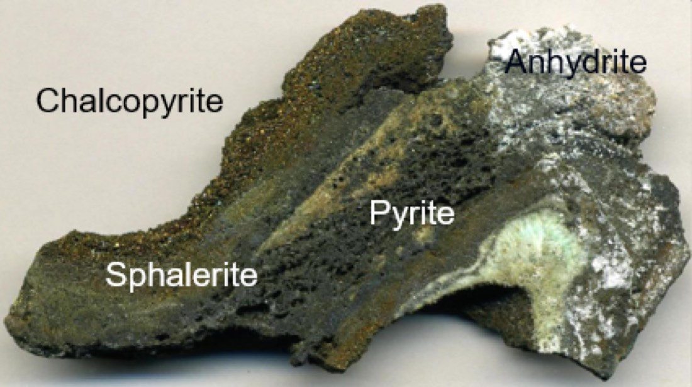
The fragment is labelled across its thickness. Which side faced the hot central channel, and which faced the seawater?
Show the reasoning
The chalcopyrite side lined the hot channel: copper minerals need the hottest fluid. Moving outwards, the minerals step down in temperature through sphalerite and pyrite to anhydrite on the outer wall, where heated seawater precipitated calcium sulphate. Read any chimney the same way: copper inside, zinc and iron in the middle, sulphate outside.
Sort the chimney minerals0 / 6
- Black smoker chimney exterior: anhydrite (CaSO₄), gypsum (CaSO₄·2H₂O), sphalerite (ZnS).
- Interior: chalcopyrite (CuFeS₂), cubanite (CuFe₂S₃), bornite (Cu₅FeS₄).
- White smoker chimney: amorphous silica, baryte (BaSO₄), pyrite, with sulphur and some sphalerite.
- Copper minerals ≈ 350 °C; sphalerite and galena below that, to about 150 °C.
- In the VMS ore suites (Rosebery, Mount Lyell, Scuddles, Woodlawn), copper-rich parts (chalcopyrite, bornite) record hotter fluid than zinc-lead-rich parts (sphalerite, galena). slide 18
- Ancient VMS sulphides are coarser than modern vent sulphides because they have been partly recrystallised. lecture recording, 25 Sep
- Baryte, anhydrite or gypsum and silica point to the cooler, sulphate-rich end of the system.
The vent field and its plumbing
Zoom out from one chimney to the whole system. A magma body sits below. It drives : cold seawater is drawn down through fractures in the host rock on all sides, heated and changed as it reacts with the hot rock, and rises in a central upflow to the vents. On the way down it loses magnesium and sulphate; on the way up it carries metals, H₂S, silica, methane and helium. The highest temperature is in the reaction zone just above the magma (about 400 °C); focused flow reaches the seafloor at about 350 °C, while warm diffuse flow seeps out around it at 2 to 60 °C. slides 21 and 22
Run the convection cell
Blue seawater is drawn down, heats up as it nears the magma, and rises to the vent. Switch on the overlays.
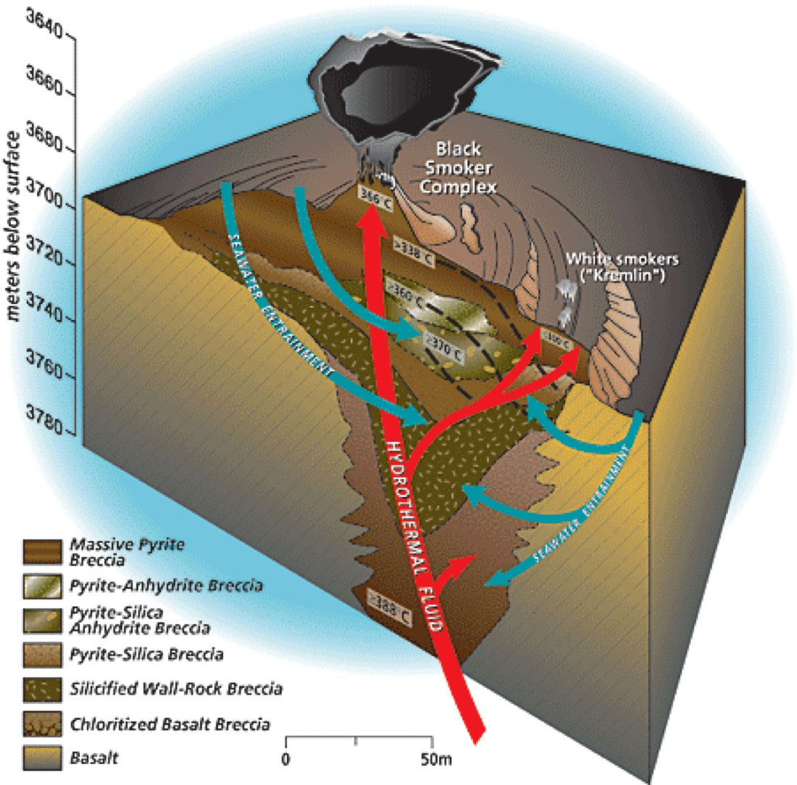
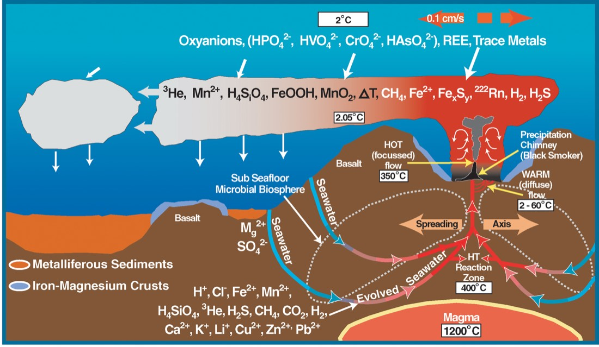
That last detail is an exploration tool. If you find iron and manganese crusts or metalliferous sediments in an ancient volcanic sequence (in Cyprus-type or Kuroko-type VMS country, say), you know you're in the right environment, and sulphide mounds may be nearby. They're a vector towards ore. lecture recording, 25 Sep
One more condition: preservation. A sulphide mound is a heap of very fine, loose particles. On the seafloor it starts to oxidise and fall apart. To become an ore deposit it has to be buried quickly, by lava, ash or sediment, before it's destroyed. Chimneys also switch off and new ones pop up elsewhere in the field, so a mound grows in pulses. lecture recording, 25 Sep
- Chloritised basalt, silicified wall rock and pyrite-rich breccias are the alteration under a VMS vent: the footwall feeder, not the massive ore. slide 21
Life at the vents
Vents are acidic, hot in places and full of dissolved metals, yet they teem with life. Tube worms don't eat in the usual sense: they host microorganisms in their tissues that metabolise sulphide from the vent fluid, and in exchange the microbes make organic compounds from the vent chemicals and seawater. The worms also feed on microbial flocs spewed out by the springs. Giant white spider crabs and bright pink prawns crowd around them; the crustaceans are brightly coloured because of the metals they absorb. Ian has seen images of crabs walking across a molten sulphur lake on the seafloor without any trouble. slide 19 lecture recording, 25 Sep
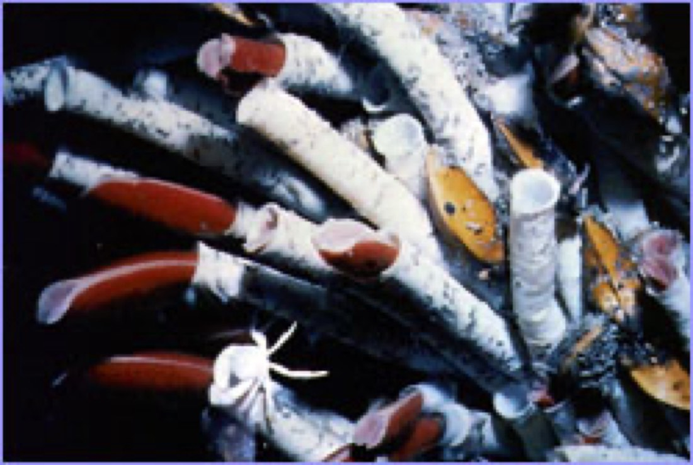
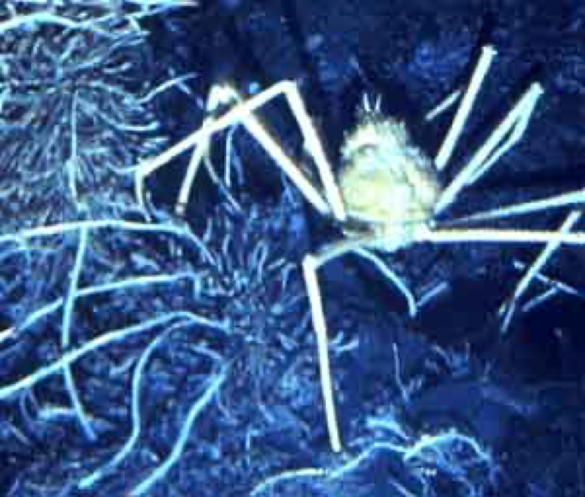
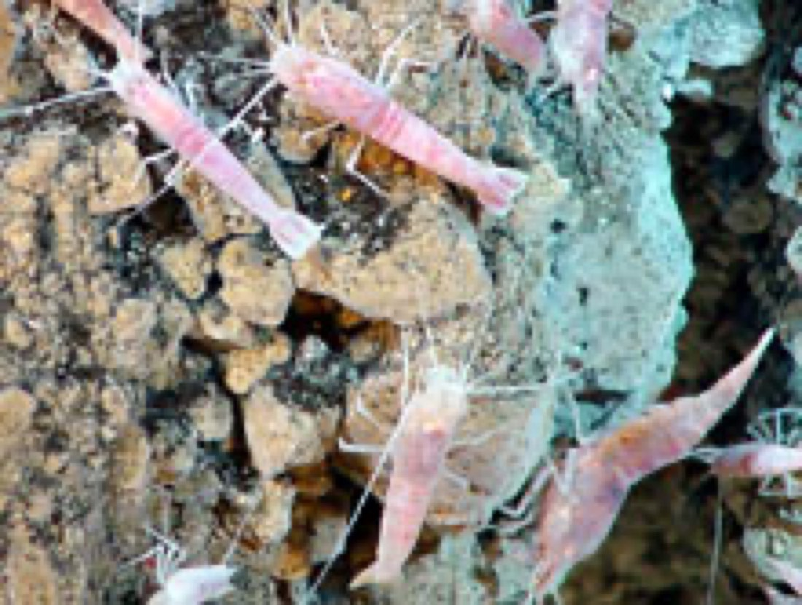
None of these animals can use sunlight at 2 km. What's at the base of their food chain?
Show the reasoning
Chemistry, not light. Microbes use the energy in the vent chemicals (especially sulphide) to make organic matter. The tube worms (A) farm those microbes inside their bodies; crabs (B) and prawns (C) graze and hunt in the same food web. These organisms are .
Match the extremophile0 / 6
Finding vents
You can't see 2 km down, so vents are found in stages. First, sonar: the ship sends sound pulses that bounce off the seafloor and come back, building a bathymetric map. The 3D images of Brothers volcano aren't photographs; they're sonar. slide 24
Next, find the plume. A package (conductivity, temperature, depth) is towed or lowered on a cable. Its light-scattering sensor measures turbidity in : a vent plume full of particles (mainly sulphur, and iron and manganese oxyhydroxides) blocks light. Its sensor tracks dissolved reduced chemicals such as H₂S; there's a sharp drop right where fresh vent fluid is coming out. Bottle samples of the water confirm the chemistry. Then you go and sample rock with a submersible or remotely operated vehicle, and occasionally drill. slide 25 lecture recording, 25 Sep
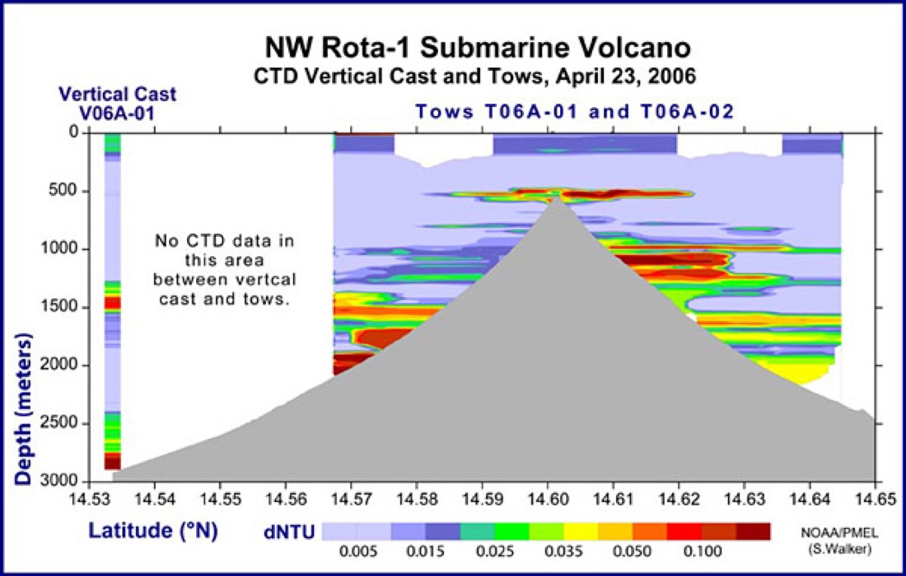
Plume hunt
A vent is hidden somewhere on this seamount. Tap the sea surface to lower the CTD there. You have five casts; then send the ROV to where you think the vent is.
Invented data for teaching: the plume drifts with a current, as real plumes do.
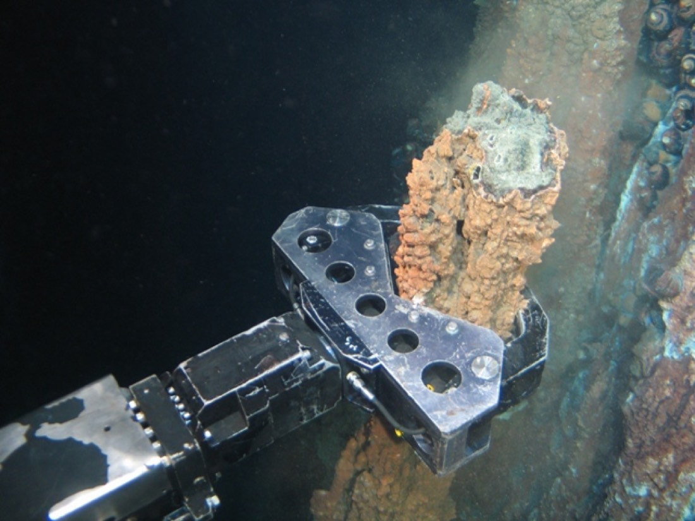
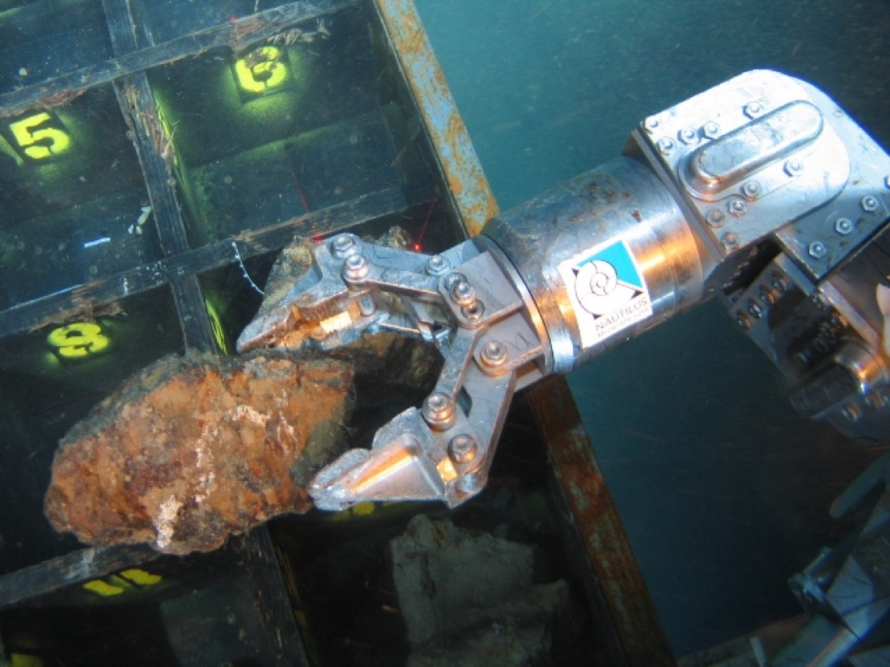
Why does each sample go into its own numbered bay?
Show the reasoning
The claw breaks the chimney off mechanically, then drops it into a numbered container. With the vehicle's position known, every sample is tied to an exact spot on the seafloor, so the mineralogy and chemistry can be mapped. It's expensive data: a research cruise costs several million dollars, and one towed sensor array lost after the Hunga Tonga eruption was worth about $10 million.
Which setting makes VMS?
Known vent fields sit on plate boundaries: mid-ocean ridges, back-arc spreading centres, island arcs, and a few in plate interiors. Over 300 sites were known by 2005, probably about 500 now, with very few in polar waters because rough seas and ice make the work so hard. Most of the work has been in the calmer margins of the Pacific. slides 11, 12 and 27 lecture recording, 25 Sep
Modern vents vs the rock record
Mid-ocean ridges were once assumed to be the best analogue for ancient VMS deposits, because that's where vents were first found and where most active sites are. The thinking has shifted towards island arcs (and back-arcs). Ridge crust is mostly subducted, so its deposits rarely survive, while arc and back-arc deposits are better preserved. Arcs are also the more favourable setting for large VMS deposits, because more sulphide is available. Modern vents have also given a petrogenetic framework: compare the volcanic rocks of modern arcs with ancient terranes and you can classify where an old VMS district formed. slides 27 to 29 lecture recording, 25 Sep
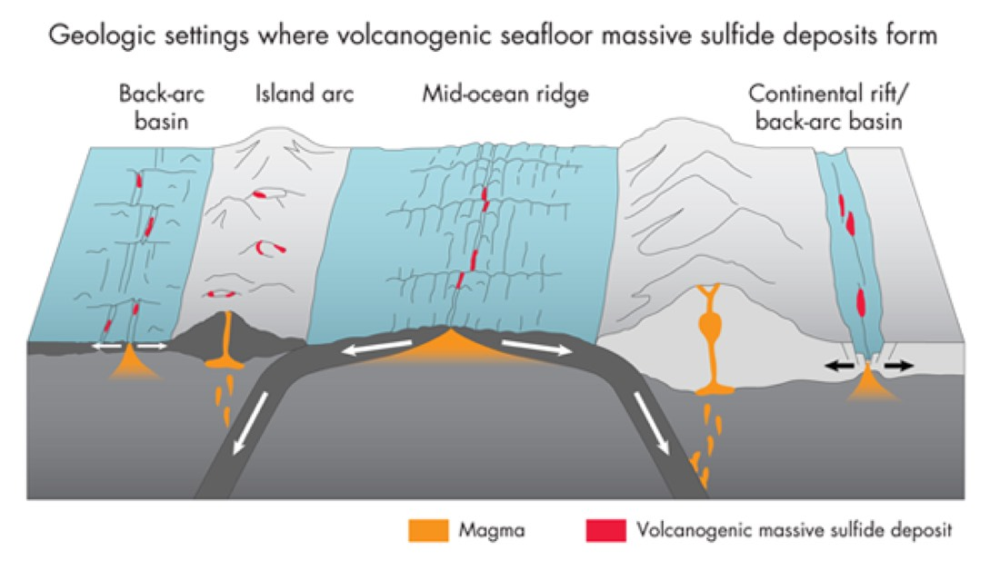
- Active vent fields: mid-ocean ridge about 65%, back-arc about 22%, island arc about 12%, intraplate about 1%.
- Ridge deposits are mostly subducted; arc and back-arc deposits survive and are the closest analogues of ancient VMS.
Kermadec Arc and Brothers volcano
The runs about 1200 km from New Zealand's North Island towards Tonga. It's the most hydrothermally active stretch of intra-oceanic arc in the world, with about 30 major submarine volcanoes and at least three VMS deposits forming now, mostly in 2 to 4 km of water. White Island (Whakaari) is its nearest volcano to New Zealand; most of the others are entirely underwater, with only a few tiny islands poking through. GNS Science has mapped it for some 30 years, partly because those volcanoes are a hazard to the North Island. slides 30 to 32 lecture recording, 25 Sep
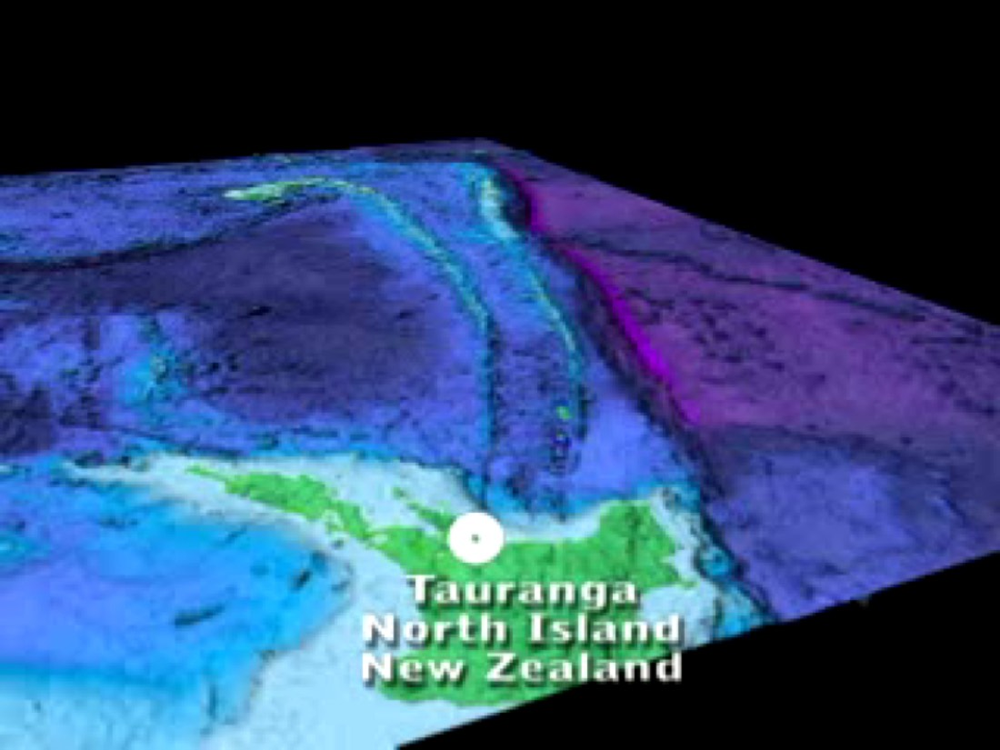
is a submarine caldera about 400 km off the coast, its rim around 1.2 km below sea level and its floor about 2.2 km down. It's divided into an upper cone, a lower cone and the NW, SE and W caldera walls, and the geology differs between them. The active sites are the cones and the NW caldera. The NW caldera holds the most significant Cu-Au-Ag deposit on the whole arc, with up to 90 ppm gold. Drilling in 2018 got poor core recovery: 2.5 km of water over an active volcano is not a friendly place to drill. Much of the exploration happened because the New Zealand Navy ran the cruises as training exercises. slides 33 to 35 lecture recording, 25 Sep
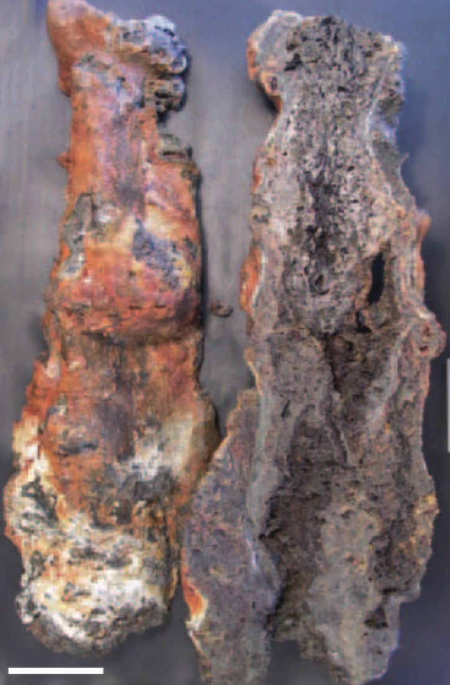
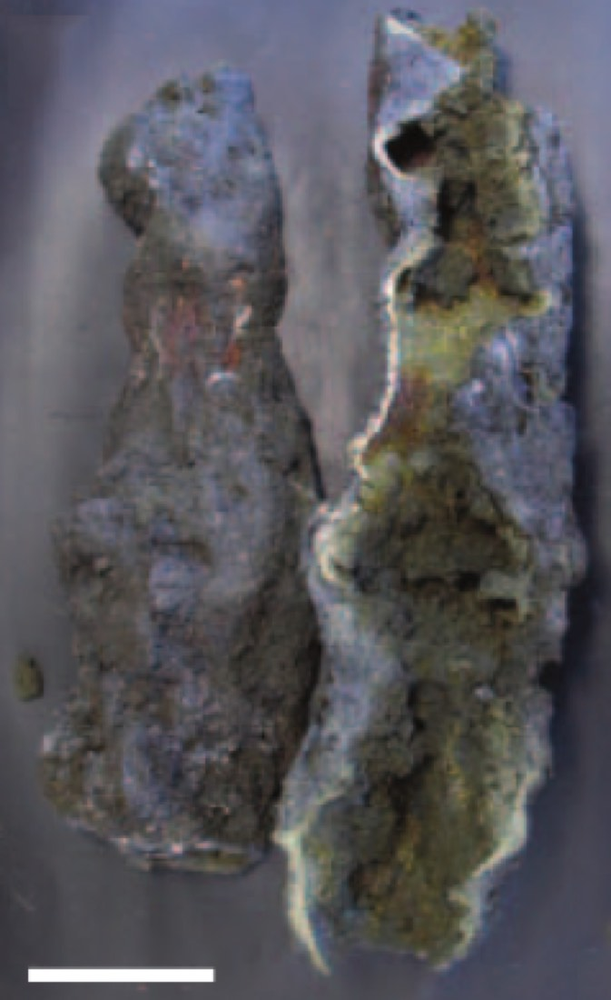
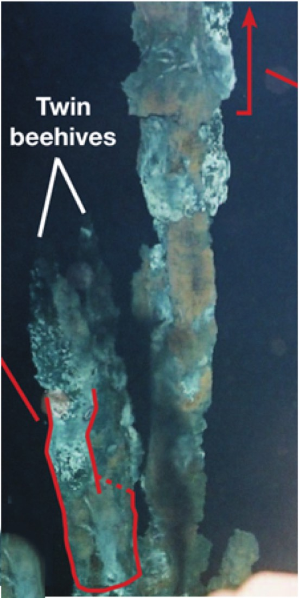
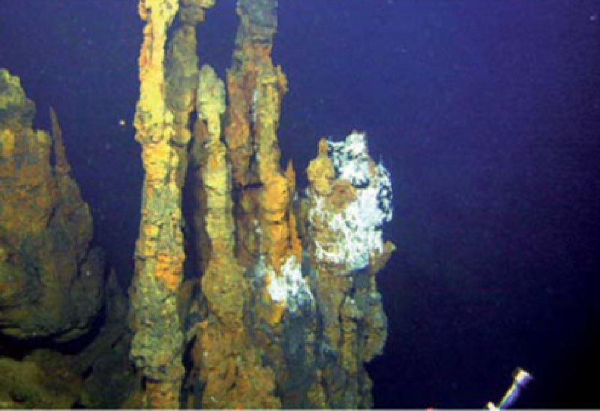
A and B are a copper-rich and a zinc-rich chimney from the NW caldera. C and D show chimneys in place. What different conditions do Cu-rich and Zn-rich chimneys record, and why might one chimney be both?
Show the reasoning
A Cu-rich chimney grew from high-temperature fluid (chalcopyrite forms around 350 °C); a Zn-rich one from cooler fluid (sphalerite, galena). One chimney can change along its length: Ian pointed out a chimney whose side grew at high temperature while its very top was lower temperature, with sphalerite and pyrite. Activity changes all the time: in D some chimneys are active and others have been broken off and gone quiet. C is the "twin beehives" site, where a copper-rich chimney was sampled.
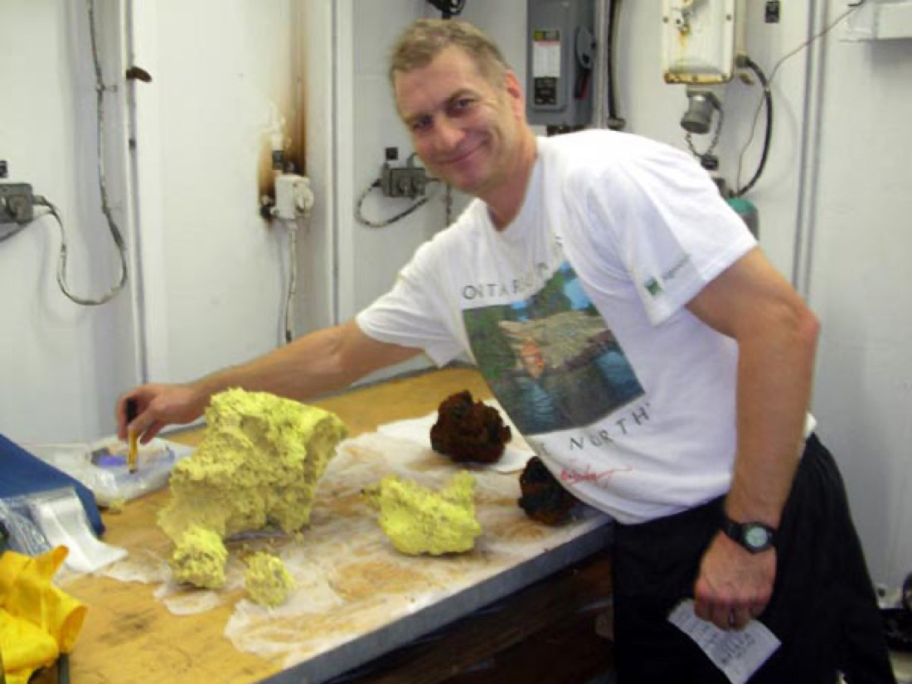
How metals ride up as vapour
In arc systems the metals don't only travel dissolved in liquid. Sulphur in its vapour form is the main transport: tiny droplets of sulphide and metal-bearing vapour bubble out of the magma, the sulphur acting as a that holds onto the metal. These bubbles rise and are swept up (entrained) by the circulating hydrothermal fluid. Near the surface the pressure falls, the vapour and the sulphide separate, the sulphide becomes insoluble, and it precipitates right at the seafloor interface. The ore isn't made deep down; it's made where the pressure drops suddenly. slides 39 and 40 lecture recording, 25 Sep
Follow a metal up the volcanostep 1 of 5
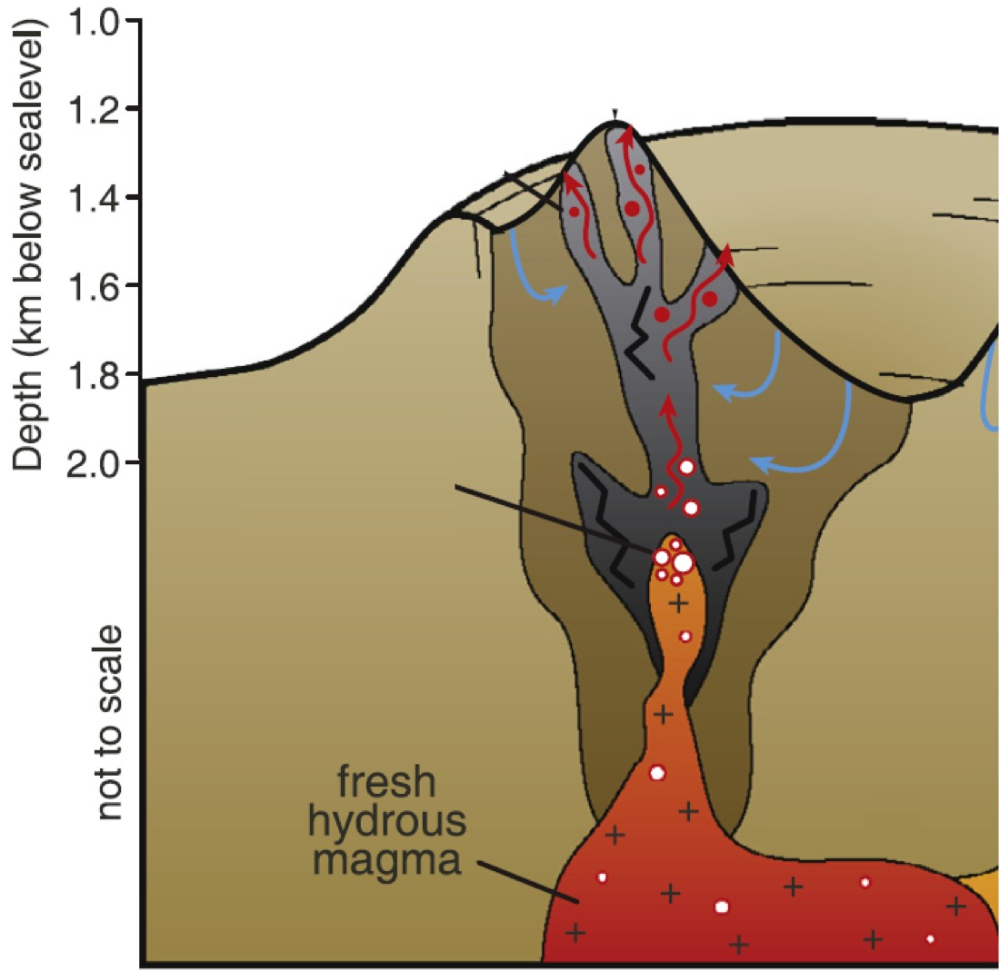
Seafloor mining: hype and reality
Every few years seafloor massive sulphides (SMS) make headlines as untold riches. The grades are real. Solwara 1, in the Bismarck Sea off Papua New Guinea, was identified by CSIRO in 1996 at 1.6 km depth and graded about 7% copper (land deposits run around 0.6%) and more than 20 g/t gold on the slide. Nautilus Minerals held about 450 000 km² of tenements, got an environmental permit in 2009 and a mining lease in January 2011. In 2018 it went bankrupt, despite good scientists and plenty of money behind it. slides 41 to 44 lecture recording, 25 Sep
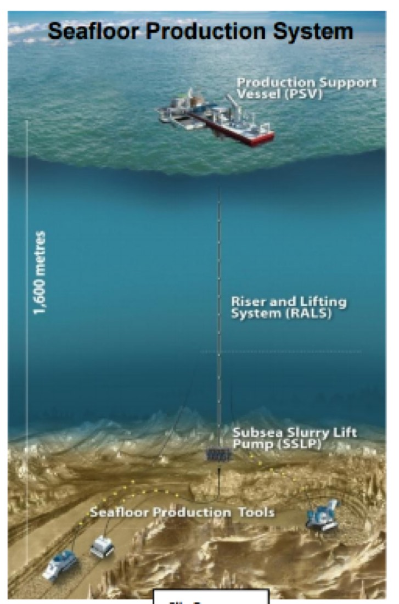
So why didn't it happen? Look at size, not just grade.
Grade vs tonnage
Resources and grades from slide 47 (Golder Associates 2008; Collins et al. 2004; Wilton 1998). Contained copper = tonnes × grade, worked out here.
Solwara's whole resource is about two million tonnes. Kidd Creek, a land VMS deposit, is 115 Mt; Ok Tedi, a porphyry, is about 910 Mt. That's why BHP and Rio Tinto stay away. On top of size come all the practical problems: slides 47 and 48
- Solwara 1 (Bismarck Sea, PNG): found by CSIRO 1996, 1.6 km deep, ≈ 7% Cu and high gold; lease 2011; Nautilus bankrupt 2018.
- Tiny: ≈ 2 Mt vs Kidd Creek 115 Mt and Ok Tedi ≈ 910 Mt.
Self-test
Answer out loud or on paper before you open each one. Claim the ounces if you got it.
Glossary and flashcards
Terms this lecture assumes or defines quickly. The dotted words in the text open them in place.
Flashcards
Where this goes next
The vents in this lecture are the living version of the VMS deposits in Lecture 10, and the arc systems link forward to porphyry and epithermal deposits (Lectures 11 and 14). The alteration around the feeder zone is the same chlorite, sericite and silica alteration you met in Lecture 2.